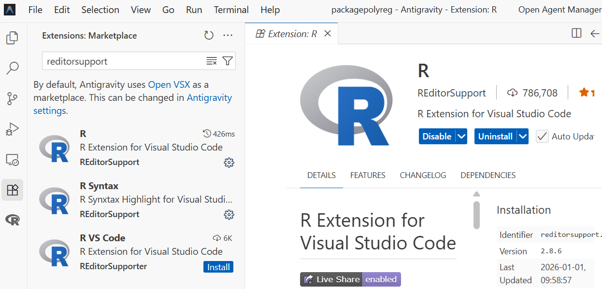
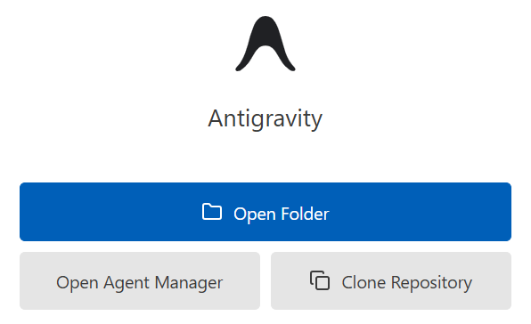
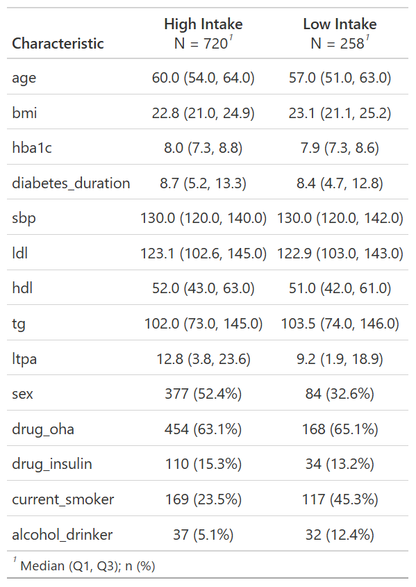
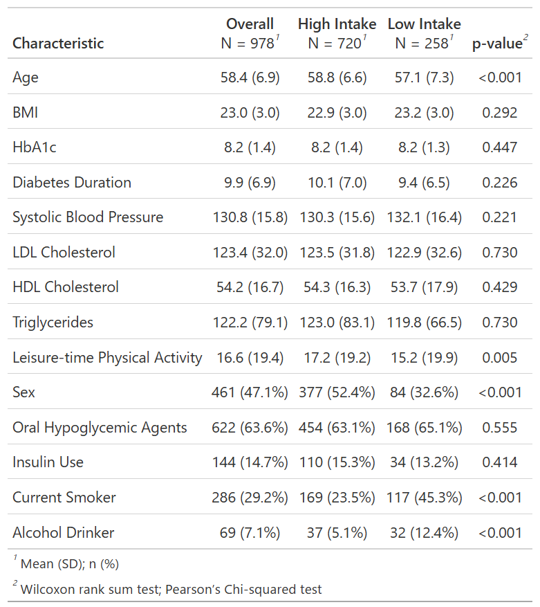

# install.packages("cifmodeling") #インストールが必要なら実行
library(cifmodeling)
data(diabetes.complications)
dat <- diabetes.complicationsGetting Started: AI-Assisted, Independently Validated Clinical Research Analyses
はじめて臨床研究を始める医師が、AIを使ってTable 1を作り、別パッケージで独立検証するところまでを、父娘の会話で体験します。

AI & R workflow I − Getting Started: AI-Assisted, Independently Validated Clinical Research Analyses
R packages: cifmodeling, dplyr, gtsummary, tableone
シリーズの位置付け
このシリーズは、因果推論の実務フローを見て頂くために、“A Conversation on Causality at Our Table”の付録として用意したものです。全3エピソードの中で、5つのスキルを習得できるように構成しています。
- AIを用いたRコーディングと品質管理（このエピソード）
- Table 1をつくるためのワークフロー（このエピソード）: gtsummary
- Kaplan-Meier曲線とAalen-Johansen曲線の使い分け: cifmodeling
- 交絡調整の仮定宣言・診断: dagittyとcobalt
- 交絡調整の実行: WeightIt
広く使われているスキルほど、深堀していくとおもしろい概念が潜んでいます。交絡調整ってなにをしているの？因果とデータってどういう関係なの？興味がある方は“A Conversation on Causality at Our Table”もあわせてお楽しみください。また、技術的詳細については、各RパッケージのVignettesをご参照ください。
もちろんAIつかうよね
私「おはよう、ご飯食べてるところ悪いんだけど、ちょっと聞きたいことがあって。統計解析するときどのアプリを使ってる？あ、コーヒーもらっていい？」
お父さん「アプリ？…統計ソフトのことだね？コーヒーもどうぞ、まだ冷めてないと思う」
私「そうよ。ソフトなんていわないでよ」
お父さん「ソフトでしょ」
私「アプリよ。世の中をソフトとハードで分けるよりずっと丁寧な呼び方じゃない？」
お父さん「よく分かんないけどどっちでもいいよ。よく使うのはSASとSTATAとR。臨床試験ではSAS、メタアナリシスはSTATA、論文によってるような新しい方法はR、って感じ」
私「ふんふん。じゃあやっぱりRにしよう、昔授業で触ったし。いや、解析しないといけないデータがあってさ。食べ終わったらさ、教えてくれない？」
お父さん「いいけど、パソコンにRStudio入ってたよね？」
私「Antigravityでできるらしいよ。Rも動くって。どっちもこのパソコンに入ってる」
お父さん「RなのにRStudioを使わないの？なんでAntigravityがいいの？」
私「Googleが出してるからよ。パソコンはGoogleアプリ、タブレットはiOSアプリ」
お父さん「へえ、まあ、エディターは好みがあるから口出ししないよ。でも使ったことないから設定は教えられないよ」
私「だいじょうぶ。えっとAntigravityを開く。R拡張機能はデフォルトで入ってないから追加する。左サイドバーでRを検索する。あれ、いっぱいヒットした、そりゃそうか。PublisherがREditorSupportのやつをインストールする」

お父さん「Antigravityが起動した。インストールできたみたい。なにか操作を求めてるよ」

私「“Open Folder”だな。調査結果を全部まとめたフォルダがあるから、それを開こう」
お父さん「ん？調査結果ってさ、整理する前だと外部に見せられない情報が入ってたりするじゃない。最低限のデータ以外は、直接AIに見せるのはやめようよ。そうだね、最初に約束を3つ決めよう」
私「約束？」
- 整理前のフォルダはAIに見せない。個人が特定できない解析用データセットを用意する。
- 作業記録を残す。できれば”Clone Repository”を選んでレポジトリで管理する。
- エージェントが書いたコードは、自主的に品質管理する。たとえば目視チェック、ダブルプログラミング、読み合わせを組み合わせる。
私「わかった、どれも納得。準備ができてないから今日は練習でいいよね？」
Table 1をつくるためのRワークフロー
お父さん「じゃあ解析を始めよう。AIを使ったことないからcifmodelingパッケージに入ってるdiabetes.complicationsデータでいろいろ試してみたい。このデータは果物摂取量と糖尿病合併症リスクの関係を調べたコホート研究の模擬データだ」
データの読み込み
私「読み込めたね。よし」
果物摂取量のカテゴリごとに平均年齢を出してお父さん「なにしてるの」
私「でたでた」
最初の集計
out1 <- aggregate(age ~ fruitq1, data = dat, FUN = mean)
print(out1) fruitq1 age
1 0 58.83194
2 1 57.06202お父さん「平均年齢がでた」
私「だいたい58歳くらいね、よし。次はどうすればいい？」
お父さん「次はどうすればいいって、ちゃんと解析の計画を立ててから動こうよ。そのためにやることはデータセットの確認」
変数はなにか（変数名）
型はなにか（数値かカテゴリか）
欠測はどれくらいか
お父さん「これは手順の問題で、R自体は難しくない」
データセットの一部の出力結果はこちら
head(dat) t epsilon strata fruit fruitq1 age sex bmi hba1c diabetes_duration
1 8.6160 0 1 75.00 0 45 0 21.5 6.9736 4.2
2 8.5120 0 4 26.80 1 68 0 18.3 8.0189 2.9
3 7.7864 0 3 64.30 0 63 0 23.9 6.8865 14.3
4 8.9144 0 1 5.35 1 49 0 22.9 7.2350 4.2
5 8.9363 0 2 211.05 0 55 0 18.7 8.2803 16.3
6 2.1958 1 3 48.20 1 61 0 23.4 7.2350 8.9
drug_oha drug_insulin sbp ldl hdl tg current_smoker alcohol_drinker
1 0 0 124 187.3 58.1 123 0 0
2 0 1 128 87.6 57.2 71 1 0
3 1 0 164 74.6 35.0 252 1 1
4 1 0 126 95.7 34.7 83 1 0
5 1 0 136 50.5 55.7 139 1 0
6 1 0 146 156.1 36.7 181 0 0
ltpa fruitq
1 52.500 Q2
2 11.025 Q1
3 4.375 Q2
4 9.375 Q1
5 12.375 Q4
6 10.500 Q1
変数名とデータの型の出力結果はこちら
sapply(dat, class) t epsilon strata fruit
"numeric" "integer" "integer" "numeric"
fruitq1 age sex bmi
"integer" "integer" "integer" "numeric"
hba1c diabetes_duration drug_oha drug_insulin
"numeric" "numeric" "integer" "integer"
sbp ldl hdl tg
"integer" "numeric" "numeric" "numeric"
current_smoker alcohol_drinker ltpa fruitq
"integer" "integer" "numeric" "factor" 私「ありがとう、曝露変数は果物摂取量を表すfruitq1で2値データ、アウトカムはtとepsilonで生存時間データってことね」
お父さん「次はどうするかな。そうだな、欠測の数を確かめておこう。fruitq1には、扱いやすいように0は”High intake”、1は”Low intake”というラベルをつける」
私「いいね、まかせた」
Rコードと結果はこちら
dat$fruit_group <- factor(
dat$fruitq1,
levels = c(0, 1),
labels = c("High intake", "Low intake")
)
exposure_var <- "fruit_group"
outcome_var <- c("t", "epsilon")
continuous_var <- c(
"age","bmi","hba1c","diabetes_duration",
"sbp","ldl","hdl","tg","ltpa"
)
binary_var <- c(
"sex","drug_oha","drug_insulin",
"current_smoker","alcohol_drinker"
)
dat[binary_var] <- lapply(dat[binary_var], function(x) factor(x, levels = c(0,1)))
colSums(is.na(dat[, c(exposure_var, outcome_var)]))fruit_group t epsilon
0 0 0 colSums(is.na(dat[, continuous_var])) age bmi hba1c diabetes_duration
0 0 0 0
sbp ldl hdl tg
0 0 0 0
ltpa
0 colSums(is.na(dat[, binary_var])) sex drug_oha drug_insulin current_smoker alcohol_drinker
0 0 0 0 0 お父さん「じゃあ今日の成果物を決めよう。論文でよく使う図表のうち、まずは患者背景を記述するための表はどう？使うパッケージはgtsummaryがいいと思う」
私「Table 1ね。作りたい。じゃあAIにいうね」
`gtsummary::tbl_summary()`を使って曝露変数`exposure_var`で層別した集計表を作って
Rコードはこちら
# install.packages("gtsummary") #インストールが必要なら実行
library(gtsummary)
# install.packages("dplyr") #インストールが必要なら実行
library(dplyr)
table1 <- dat[, c(exposure_var, continuous_var, binary_var)] %>%
tbl_summary(
by = exposure_var,
digits = list(
all_continuous() ~ 1,
all_categorical() ~ c(0, 1)
)
)
print(table1)
お父さん「いいんじゃない？」
私「表を見たらもう少しこだわりたくなってきた。全体の人数も欲しいし、p値も加えたい」
平均とSDに変更して。全体集計とp値を表す列を追加して。変数名じゃなくてラベルをつけて。桁数も整えて。
Rコードはこちら
table1 <- dat[, c(exposure_var, continuous_var, binary_var)] %>%
tbl_summary(
by = exposure_var,
statistic = list(all_continuous() ~ "{mean} ({sd})"),
digits = list(
all_continuous() ~ 1,
all_categorical() ~ c(0, 1)
),
label = list(
age ~ "Age",
sex ~ "Women",
bmi ~ "BMI",
hba1c ~ "HbA1c",
diabetes_duration ~ "Diabetes duration",
drug_oha ~ "Oral Hypoglycemic agents",
drug_insulin ~ "Insulin use",
sbp ~ "Systolic blood pressure",
ldl ~ "LDL cholesterol",
hdl ~ "HDL cholesterol",
tg ~ "Triglycerides",
current_smoker ~ "Current smoker",
alcohol_drinker ~ "Alcohol drinker",
ltpa ~ "Leisure-time physical activity"
)
) %>%
add_p(pvalue_fun = ~ style_pvalue(.x, digits = 3)) %>%
add_overall()
print(table1)私「できた！平均・SD・割合の桁数は小数点1桁までだけど、p値は小数点3桁まであった方がいいよね」

お父さん「ちょっと待ちなよ。このp値はなんのp値？」
私「なにって、曝露と非曝露を比較するp値だよ」
お父さん「そうじゃなくてさ、なに検定を使ってるの？」
私「あ、たしかに。ちょっと待って調べる。ヘルプは?add_p()で出すんだよね。…ふむ、ヘルプをたどるとWilcoxon順位和検定と\(\chi^2\)検定って書いてあった。期待人数が5より低いと、\(\chi^2\)検定じゃなくてFisher正確検定が選ばれる」
お父さん「そうそう。それであってる。ただし、患者背景のバランスをみるときは、p値より標準化平均差（SMD）を使うことが多いけどね。それともうひとつやることがある」
統計解析の品質管理
お父さん「これはAIを利用した解析に限らないけど、データの扱いやプログラミングにエラーがないかどうか確認すべきだよね。この手の品質管理は、AIを使った方が効率的だと思う」
この結果が正しいかダブルプログラミングでチェックしたい。別の関数を使って表を作って
Rコードと結果はこちら
# install.packages("tableone") #インストールが必要なら実行
library(tableone)
# install.packages("dplyr") #インストールが必要なら実行
library(dplyr)
Attaching package: 'dplyr'The following objects are masked from 'package:stats':
filter, lagThe following objects are masked from 'package:base':
intersect, setdiff, setequal, union# Prepare data with same labeling
dat_check <- diabetes.complications %>%
select(all_of(continuous_var), all_of(binary_var), fruitq1) %>%
mutate(fruitq1 = factor(fruitq1, levels = c(0, 1), labels = c("High intake", "Low intake")))
# Create summary table using tableone
table2 <- CreateTableOne(vars = c(continuous_var, binary_var), strata = "fruitq1", data = dat_check, test = TRUE)
print(table2, showAllLevels = TRUE) Stratified by fruitq1
level High intake Low intake p test
n 720 258
age (mean (SD)) 58.83 (6.63) 57.06 (7.29) <0.001
bmi (mean (SD)) 22.95 (3.01) 23.19 (2.97) 0.273
hba1c (mean (SD)) 8.23 (1.39) 8.16 (1.27) 0.476
diabetes_duration (mean (SD)) 10.14 (6.99) 9.39 (6.45) 0.133
sbp (mean (SD)) 130.29 (15.60) 132.06 (16.42) 0.123
ldl (mean (SD)) 123.51 (31.80) 122.91 (32.56) 0.796
hdl (mean (SD)) 54.35 (16.30) 53.66 (17.93) 0.573
tg (mean (SD)) 122.99 (83.14) 119.85 (66.52) 0.584
ltpa (mean (SD)) 17.16 (19.21) 15.20 (19.93) 0.164
sex (mean (SD)) 0.52 (0.50) 0.33 (0.47) <0.001
drug_oha (mean (SD)) 0.63 (0.48) 0.65 (0.48) 0.555
drug_insulin (mean (SD)) 0.15 (0.36) 0.13 (0.34) 0.415
current_smoker (mean (SD)) 0.23 (0.42) 0.45 (0.50) <0.001
alcohol_drinker (mean (SD)) 0.05 (0.22) 0.12 (0.33) <0.001 私「p値と桁数とは違うけど、要約指標はあってたみたい。これで問題なさそう？」
お父さん「患者背景の集計まではね。CreateTableOne()でどの検定を使っているか後で確認するとして、いくつか注意点を振り返ってもいい？」
私「どうぞ」
お父さん「解析はデータからスタートしちゃだめ。必ずプランを立ててから始めること。そしてそうするためには、変数の名前、クラス、データの収集状況を把握する必要がある。これはいいよね」
私「わかってる」
お父さん「そして、解析結果は最終的に図表にまとめることが多いから、図表のひな型までプランに入れておく。今回は後から全体集計とp値を追加したけど、あんまりスマートじゃなかったよね」
私「まあね。次からはp値がいるかどうか先に考えておく」
お父さん「うんうん。ここまでをまとめると、どんな解析をするときも最低限この3つは押さえておいた方がいい」
- 変数の定義
- データの収集状況
- 図表のひな型
私「あとさ、お父さんって、AIにプロンプト出すとき関数まで指定するよね」
お父さん「うん、そうしないと、どの統計手法を使うかがぶれそうだなって、途中で気付いて。それとAIにはダブルプログラミングをさせるべき。こういった工夫は、大きな負担にならない割に、計画通りにプログラミングされているかコントロールしやすくなるよね」
臨床研究におけるAIとRの利用に関するふたりの会話はいかがでしたか？以降のエピソードでは、競合リスク解析・交絡調整から頻度論シミュレーション実験までを、Rで体験いただける構成になっています。
もしロジスティック回帰の表作成について詳しく知りたい方は、“A Conversation on Causality at Our Table”のこのエピソードもご覧ください。
関連エピソードはこちら
このシリーズのエピソード
Getting Started: AI-Assisted, Independently Validated Clinical Research Analyses
An R Demonstration of Bias in Kaplan-Meier Under Competing Risks
Unadjusted vs Adjusted Cumulative Incidence Curves with AI & R
生存時間解析・競合リスク解析入門
Rシミュレーション
- Understanding Confidence Intervals via Hypothetical Replications in R
- Alpha, Beta, and Power: The Fundamental Probabilities Behind Sample Size
DAG入門
用語集